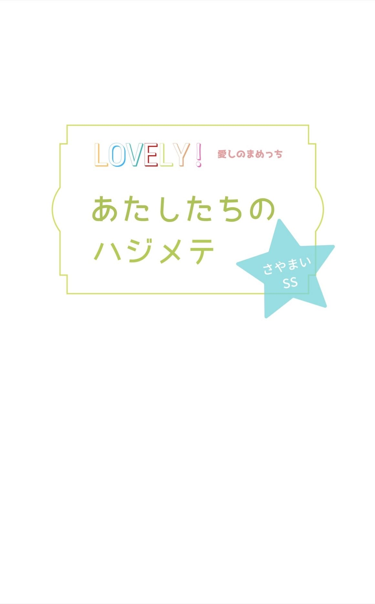
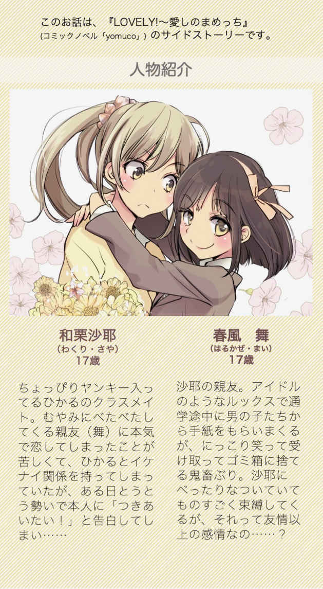
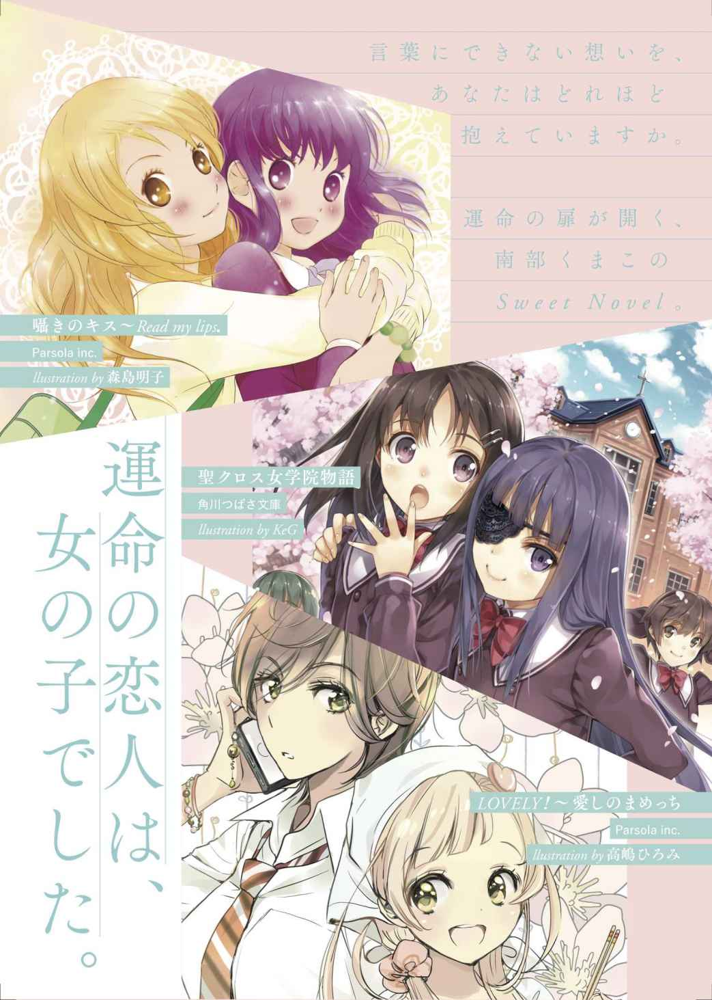
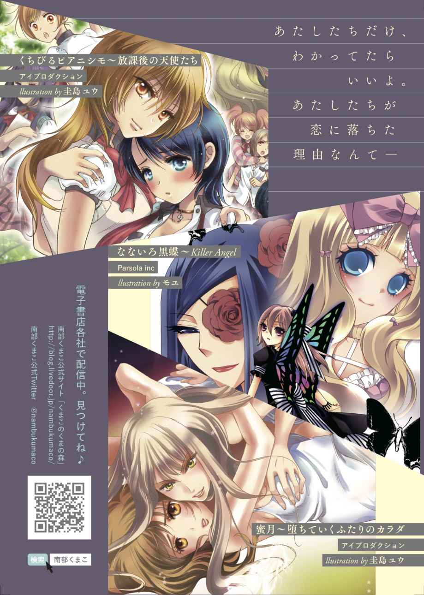

| LOVELY! 愛しのまめっち: 〜あたしたちのハジメテ〜［さやまいSS］ (くまこ文庫) | |
| 南部くまこ | |
| (2019) | |


１
言えないはずの恋を賭けたコインは、夕陽を受けてキラキラと回転しながら高く舞い上がり、ストンとあっけなく床に落ちた。
カタカタカタカタカタ......
ピタッ。
「......裏だよ」
喉の奥から、安堵ともなんともつかぬため息が漏れた。
なるほど、神様は反対か。
いつものように鼻で笑おうとして笑えなかったんだ。よりによって女の子に恋したあたし。いつだって親友の顔で、密かに寄り添ってる。ううん、見張ってるんだ。ほんとは。
この子が。
舞が、どこにも行かないように。誰にもさらわれたりしないように。
でも、いつか。
きっと、いつかいつかいつか。
「もーー、ハナシ見えなーい！ 何が裏なの⁉︎ ねぇ、沙耶！ 何が裏なのよーーーっ！」
ギャンギャンわめきながら舞は、まだ無邪気に足を踏みならしている。
ああもう、ほんとうるさい。うるさい、うるさい！
こいつは、ほんと、人の気も知らないで。
いつだって無邪気に。無邪気すぎるくらい、あたしを。
あたしのすべてを。
何も知らず。知ろうともせず。
誰よりも残酷な笑顔で。無邪気にブチ壊してしまって。
あたしはぐいっと肩をいからせて舞に向き直った。
友達なんていらない。そうだった、そもそも。
「......教えてあげる」
「うん、教えて？」
舞の瞳がきらきら輝いてる。
神様。あんたが反対なのはわかってる。だけど。
「あのね、あたしが舞の恋人になりたいって話」
ぴたっ。
彼女の歯車が止まった。
２
冷たい渡り廊下の床にぺたんと座り込み、さっきから舞はずっと俯いたままだ。
いつも微笑みを貼り付けてる口元が、力なく薄く開いている。くるくるとよく動く瞳が、赤い夕陽が映る床を眺めたまま、ぴたりと止まっている。
知ってる。これがほんとの舞。
笑顔の仮面を外せば、いつだってなぜか孤独な気配。
むきだしの彼女は、何かを考え込んでいるように動かない。
困っているのかもしれない。当たり前か。困らせて、ごめんね。
舞のスカートが、まるで花のように床に丸く広がってる。
ちょっと寒そうにみえる小さな膝。それから夕陽を反射する太ももに目をやってる自分に気づいて苦笑する。こんなときまでキモすぎない？ あたし。
あたしはすこしだけ舞のそばに寄り、壁ぞいに座り込んだ。軽く見上げると、ちょうど正面に眩しい窓が見える。どうかしてるくらい赤く染まってる空。
この空をきっと、あたしは一生忘れられないだろう。生まれて初めて自分から恋を口にした、この瞬間のことを。
手を伸ばして、床に落ちたままのコインを拾う。舞は、まだ何もしゃべらない。
何か言うべきだろうか。でも、何を？
中学の頃、あたしにはカレシと呼べる人が何人かいた。モテないほうじゃなくて、ううん、どっちかっていうとモテるほうなんだと思う。次から次に告られるから、感じのいいヤツを選んでてきとうに遊んだ。男の子はやさしかったし、どちらかというと女の子は嫌いだと思っていた。
うるさいし。
嫉妬とかして、ヤなこと言うし。
だから、女子高に進学することになっちゃって、最初は憂鬱だったんだ。
『ね、ね、沙耶って呼んでいい？』
今でも覚えてる。入学してほどなく、舞が初めて話しかけてきてくれたこと。
『休みの日って何してる？ 今度、一緒に遊びにいこーよ！』
信じてなかった。むしろ警戒した。ぴかぴかしてる舞は、すでに何人も仲いい子たちができてたし、あたしはなんか怖がられて、はやくもちょっと浮きかけてたし。
まあどうでもいいかとか思いつつ、聞かれるままにLINEを教えたんだ。どうせお姫様の気まぐれ。なのに舞は律義に約束を守った。
『ねーねー、舞、遊園地に行きたい！』
なんで気に入られたのかわかんない。
べたべたされてびっくりしたけど、嫌じゃなかった。
つられて笑ってみたら、友達がたくさんできた。
いつの間にかあたしと舞はセットみたいになってて、毎日毎日、どーでもいい話で笑い転げた。
カレシは全部消えた。てゆうか、切った。つまんないから。
学校が楽しい。舞といるのが楽しい。
『ねー、沙耶ぁ』
甘く呼びかけられると、鼓動が速くなるのはいつから？
わからない。抱きつかれてうれしいはずなのに、あたしは怖くなってきた。
ゴムみたいにくにゃくにゃ動く形のいい唇に目が吸い寄せられる。
『舞、キスしたことある？』
ああ、馬鹿、あたし。なんてこと聞いてんの！
舞が、きょとんとした。
『あるよ、いっぱい。パパとか、ママとか。沙耶ともするじゃん』
『いや、そういうんじゃなくてさ、......男子と』
『えー？』
ほんのり赤くなった舞。
『ないよ。だって、つきあったことないし』
ありえない、こんなにかわいいのにカレシいないとか。
胸が潰れそうに痛くなる。まだ現れてもいない舞の"初めてのカレ"に嫉妬して窒息してしまいそうになる。
コレって何？
つまりそれは恋だと、気づくのにすこし時間がかかった。
気づかせたのは、ひかる。
彼女は同情するような目であたしを見た。
それで気づいたんだ。ひかるもきっと、困った恋をしてるんだって。
ひかると寝ると、すこしだけ気が晴れた。オトコよりはずっと舞に似てるカラダ。
気持ちいい、すべすべの白い肌。舞も、きっと。
だけど気づいてしまえば想いはますます深くなり、あたしをがんじがらめに閉じこめはじめる。無邪気な舞の笑顔や、かわいい独占欲を、恨めしくさえ思った。
これが恋だっていうなら、これまでのカレシなんてゼロ以下だ。
なんでよりによって女の子にこんな。
言えない、絶対に言えない。絶対に。
なのに、どうして言っちゃったんだか。そう、やっちゃったとしか言いようがない。
コインは裏だったのに。危険を知らせてくれていたのに。
呆然と座り込んだままの舞は、まだジッと俯いている。あの能天気な笑顔は消えてしまった。舞はいま、たぶん、どう言えばあたしを傷つけないかを必死で考えてる。それだけでも感謝すべきことだろう。オトコに声をかけられても「ごめんね。興味ないんだ」だけなんだから。
あたしは、軽く息を吸った。ごめん、舞。間に合うといいけど。
「......舞」
静かに呼びかけると、舞は弾かれたように顔を上げた。夕陽を受けてオレンジに染まるその頬に、一瞬、眩しく目を細めた。舞、忘れない、一生。あたしは泣かないように慎重に笑顔をつくった。
「嘘だよーん。びっくりした？」
「えええっ?! 」
舞の目がかなりの衝撃レベルで見開かれる。と、そのまま、力が抜けたように、ぷうっと後ろにひっくり返った。ごん。かたい床に後頭部を打つ鈍い音。
ちょっ、大丈夫？ あわてて四つん這いになり、彼女の顔を覗き込む。
舞は心の底から驚いたというふうに、ゆっくりと両手で目をおおった。
「......ひどいよ、沙耶」
ひかると二人で、あたしこと、からかったの？
３
「や、違くて」
あたしは焦って言い訳をした。
「からかったってゆーか、ちょっと思いつきで。なんていうか賭け？ みたいな？」
ああ、あたしったら、なんて狡い。苦々しい思いが喉を打つ。
「賭けぇ？ もー、やめてよ、そーゆーのォー」
舞が、はああっと深い深いため息をついた。心底安堵したようなその声に、あたしは身勝手にも傷ついて目をそらす。たちまち目頭が熱くなる。あえなく潤んでく視界。見えるのは、赤い、赤い空。ガラス越しに差し込んでくるオレンジ色の陽射し。あたしと舞が出会った古い校舎。
この色、この空気。忘れない、一生。
大切な舞。怖いほど好きだった。たぶん、これからも。
だから。
これまで通り、親友でいよう。
カルビ、牛タン、ハラミ、ミノ。心の中でおいしいものを必死で並べて笑顔をつくる。
失恋、上等。もともとこんなのガラじゃなかった。こんなに思い詰めるなんて、あたしらしくなかった。あたしは四つん這いのまま、もう一度、世界一大好きな親友の顔を覗き込んだ。
「帰ろ、舞。こんなとこ寝っころがってたら風邪......」
え？次の瞬間、あたしは目を疑った。どうして？
確認するように、おそるおそる彼女に顔を近づける。
どうして泣いてるの？
舞は、天を向いたまま静かに泣いていた。
その目をおおった両手の隙間から、音もなく涙が流れていた。
胸元のリボンが、上下している。嗚咽をこらえるようにかすかに震えながら。
「舞......？」
疑問形で呼びかけたあたしに、彼女はゆっくり両手を開いた。そして、何も言わずにあたしをじっと睨む。いつもより、さらに煌めく強い瞳で。
妙な姿勢のまま、あたしたちは、しばし見つめ合った。おしゃべりな唇よりも、もっと饒舌な舞の瞳。無言で、卑怯なあたしを責める。そして。
不思議なことだけど、このとき、あたしにははっきりわかったんだ。
舞も、同じ気持ちであたしのことが好きなんだと。
あたしの目から、こらえていた涙がこぼれ落ちた。
それを見て、舞がかすかに目を開き、そして泣きながらくしゃっと微笑んだ。
ほんとうに？ 舞。
ほんとうにそうだと思っていいの？
オレンジに染まる彼女の頬に、あたしの涙がはたはたと落ちる。
舞、あたしはあなたのことをずっと。だめだと思っても、どうしてもずっと。
舞が、あたしの頬に指を伸ばし、確かめるように涙にふれた。そのまま首に腕をまわして、あたしの顔を引き寄せる。求められるままにあたしは舞に覆いかぶさり、キスをした。かするだけじゃない、初めての、恋人みたいなやさしいキスを。
恋焦がれた彼女の唇のやわらかさに身を震わせながらあたしは、まるで彼女にひれ伏しているようだと思った。
舞、あたしはこの日を一生忘れない。オレンジの光も。
４
その日の帰り道は、あたしたちにしては怖いほど無口に。
ただ、指をからめてつないだ手を、どちらもぎゅっと握りしめて。
友達から恋人への見えない壁を、言葉もなく、流れ落ちる雫と、見つめ合う瞳と、涙味のキスだけでひらりと飛び越えたあたしたちは、まだどこにも着地してないような不安定さで。
でも、このまま空も飛べそうな高揚感だった。
いつもより少しだけ遅い時間。街灯の下を歩く舞はもう泣いてはいなかったけど、すごく泣いたあとがはっきりわかるピンク色の目の縁と濡れたまつげ。まだすこし鼻をすすりながら俯きかげんに、黙ってあたしに歩調を合わせている。
あたしは不安になって、舞の手を揺らした。
ねぇ、なにかしゃべってよ。いつもみたいに。
舞がちょっと上目遣いの"かわいい顔"で、あたしを見る。
うわ、かわいすぎ。あたしは照れて、口の端で笑う。
どちらもまだ、しゃべらない。指先だけを編むようにからめて、まるで先にしゃべったほうが負けみたいだ。
そのとき突然、舞があたしの手を強く引いて、暗いビルの隙間にあたしを引っ張り込んだ。「えっ？」と驚いてる間に、ビルとビルの間に強引に押し込まれる。舞の鞄がばさっと地面に投げだされた音がして、驚くほど強い力で双肩をつかまれた。無言で壁に背を押しつけられる。
「ちょっ、舞！」
視界を遮るように飛び込んできたのは、ほぼ同じ高さにある彼女の瞳。まるで怒ったようにあたしを睨みつけて、見たこともないほど切ない色で。
「......んっ」
乱暴に唇を押しつけられて反射的に目を閉じた。指は、その瞬間に迷いもなく、革の鞄を手放していた。足元にどさりと落下する重たい音を感じながら、あたしは迷いなく舞の腰に腕をまわして強く強く引き寄せた。密着するカラダ。いつもと同じ。でも、全然違う。
だって、舞に。
唇を塞がれてる。
弾けるように頭に血が上ったあたしは、彼女をぎゅううっと抱きしめると、思わず舌で彼女の唇を強引にこじ開けてしまった。硬い歯列の隙間に舌をねじ込むと、彼女は小さく呻き声をあげた。自分からキスしてきたくせに震えてあたしの肩をぎゅっとつかむ。ああ、鼓動が激しすぎて痛い。こんなふうになったことない。心臓が壊れるかもしれない。
「......う......ぁっ」
苦しげな吐息。たぶん彼女は初めて知る性的なキス。頭が真っ白になっちゃってるあたしに狂ったように奥を探られて、たぶんひどく苦しいはず。立ってられないほどゾクゾクしてるはず。
だけど彼女はあたしの舌を傷つけまいと必死で口を開き続ける。ぎこちなく舌を絡ませ、一生懸命、応えようとする。熱い、やわらかい、甘い、舞、舞......
もっと深く。もっと、もっと。息継ぎをするように唇を離して、すばやく逆側に首を傾けたそのとき。
「待って！」
鋭い声で舞からストップがかかった。あたしはハッとして彼女のカラダを解放する。舞の手があたしの肩からずるずると流れ落ち、ゆるくあたしの腰のあたりにまわされた。
「ごめ......、ちょっと心臓が......」
肩に頬をのせるように、くったりと寄りかかってくる。あたしは両手をホールドアップのように空に広げたまぬけな格好でピキンと硬直したまま、横目でそうっと舞の様子をうかがった。耳に流れ込んでくる苦しげな息づかい。湯気が出そうなほど紅潮した頬。かたく閉じられた瞳。かすかにひそめられた眉。
あああああああああ！
とたんに頭をかきむしりたくなる。
あたしったらもしかして超浮かれモード入り過ぎ？
てか、飛ばし過ぎだっつーの!!
「あの、ヤ、だったり？」
「ううん、違くて」
はぅ、と舞が小さく息をついた。そして小犬みたいに鼻を鳴らして、ぼそぼそと訴えてくる。
「まだ言ってもらってない」
何を？ きょとんとしたあたしのことを、舞が薄目をあけてチラリと睨んできた。
ああ、もしかして「好き」とか「つきあおう」とかそういうこと？
なによ。あたしは照れくさくなって、突っ立ったままぼそぼそと呟いた。
「言ったじゃん、もう」
「沙耶、嘘って言った」
「でも」
わかったでしょ？ それこそが嘘だと。
あたしは言ったよ。舞の恋人になりたいって。むしろ何も言ってないのは。
「舞」
「え？」
「舞こそ、何も言ってくれてない」
そう言うと舞は、困ったようにあたしからゆっくり身を起こした。半分は闇に、半分は舗道から差し込む光に照らされたお人形みたいな顔立ち。あたしの目の奥を探るように見つめてくる吸い込まれそうに強い瞳。何かを言いかけて薄く開いた形のよい唇が逡巡するように再びつぐまれ、照れたような苦笑をともなって、ゆっくりと首がかしげられた。
「沙耶、ほんとにわかってなかったの？」
「何を？」
「だから、あたしがぁー」
言いかけて、黙る。いつもうるさいくらいわめいてた言葉。こんな時には言ってくれないの？ 黙ってじっと見つめると、言葉の代わりに彼女は再びあたしの肩に頬をこすりつけた。
「沙耶」
「ん？」
「さやぁ」
「どした？」
「沙耶」
沙耶。沙耶。沙耶。
ねぇ、沙耶。さやぁ。
まるでそれしか言葉を知らないみたいに甘くあたしの名まえを呼ぶ。あたしはたまらない気持ちになって、再びそっと彼女の背を抱いて呟いた。
「舞」
「沙耶」
「舞」
「沙耶」
目を閉じて、あたしたちは互いの声を互いのカラダに染み込ませる。
月の光を浴びるように、さやさやとした夜の空気に身をまかせたままで。
「あああああ、沙耶っ！」
舞は一瞬、息もできないほどぎゅうううとあたしを抱きしめると、パッとカラダを離してあたしの目をのぞきこんだ。
「今夜は帰りたくない」
ええっ？ あたしは思わず噴き出した。どこで覚えたの、そんなセリフ。
なんか、そうくるとは思わなかったな。
あたしは少し緊張がほぐれて、目を細めながら彼女に微笑みかけた。
「あたしはいいけど、舞んちは怒られんじゃない？」
そーだけど！ でもでもぉ！
「離れたくなぁい！」
「沙耶も離れたくないよ」
「ほんと？」
「ウン」
どちらからともなく首を傾けて、あたしたちはまた唇を寄せた。今度は目を閉じて想いを伝え合う、やさしいキス。じっと唇に彼女を感じたまま、あたしはふと気づいた。
あ、なんだかすごくいい匂いがする。
それは彼女の香水とあたしの香水が二人の熱でまざりあって立ちのぼる香りだった。
５
駅につくと、あたしたちはアッ！とお互いの背中を指さし、あわててぱたぱたと汚れを払いあった。暗い道ではよくわからなかったけど、煌々とした駅構内のあかりの下でやたら薄汚れた女子高生ふたり。あんな狭いとこに入り込んでたんだもん、そりゃそうか。
「あーあ、これクリーニングだよ」
「うはははー！ 沙耶、袖もきちゃない！」
「誰が連れ込んだのよ、誰が」
ニャハハハハと、妙な声で笑う舞。ブレザーの袖と背中を土埃で白く染めて、同じように薄汚れまくってる鞄をぶんぶん振り回してはしゃぐ。喉の奥まで見えちゃいそうな満開の笑顔。あたしもうれしくなって彼女に駆け寄り、その手をとった。大声で笑いながらふたりで階段を駆け上がり、軽やかに改札を走り抜ける。
もう、抜け出せない。ここから。幸せな彼女のオーラのなかから。
舞、あなたはいつの間にかあたしのなかに入り込んで、あたしをこんなふうに虜にしてしまって。
ホームであったかい午後ティーを分けあって飲んでいると、隣町の男子高の制服を着た男の子が、真っ赤な顔して舞に声をかけてきた。手には封筒。たぶんラブレター。舞が戸惑ったように、彼を見上げる。
また？ と、あたしはかすかに眉をひそめた。古典的なこのシーン、何度見ても慣れない。何度「ごめんね。興味ないんだ」を聞いても安心できない。だけど、今日はうれしいことが起こった。
「ごめんね。恋人がいるから」
舞はきっぱりそう言うと、心臓がひっくり返りそうになったあたしの腕を引っぱって、ホームにすべりこんできた電車に乗り込んだ。そしてひとつだけ空いてた席にひょいとあたしを座らせて、ぽいと荷物を膝に置く。
あたしはたぶん真っ赤な顔で、舞のことを見上げてた。彼女はつり革に両手でぶら下がってギシギシ鳴らしながら、いたずらっ子のような笑顔であたしの瞳をのぞきこむ。
「どう？ 新しいお断りバージョン」
ぷしゅぅと電車のドアが閉まる。かわいそうな男の子は、愛のお手紙を手にしたまま、ホームで呆然と見送っている。あたしはおもむろに口を開いた。
「手紙くらい読んであげたらよかったのに」
「ひゅー！ 沙耶、余裕ぅ～！」
まあね。だってきっとこれが最後だから。
たぶん今夜のうちには、近隣すべての高校にもれなく噂が伝わるだろう。あの舞ちゃんに恋人ができたっていう噂が。まさかそれがいつも隣にいる女の子だとは誰も思わないだろうけど。
恋人か。
あたしが、舞の恋人。
そう思うと胸のちょこっと上あたりがじーんと熱くなるのを感じながら、あたしはわざとツンとすまして言った。
「だって舞、片思いってつらいんだよ？」
「知ってるよ、そんなの」
舞が、あたしのほっぺをむにっとつまんだ。
６
「ぎゃああああっ！」
次の日の朝、教室のドアを開けて雄叫び一発。あたしは黒板を指さして、空気の足りない金魚みたいに口をぱくぱくさせた。だって、そこに書かれていたのは！
・・・・・・・・・・・・・・・
祝！ さやまいご成婚！
～そして二人は伝説になる～
・・・・・・・・・・・・・・・
なっ、なななななななーーーーー！！！！！！！
「沙耶、遅っそーい！」
「いよっ、やっとご両人揃ったねえ～」
「ヒューヒュー！」
腰を抜かしかけてるあたしに、クラスメイトの声が雨あられと降ってきた。
なんなの！ なんなのこれは！
ちょっとあれ書いたの、誰なのーーっ!!
「沙耶ぁーー♡ 会いたかったぁ～♡」
だだだだだだーっ、べたっ。
小犬のごとく転がりながら駆け寄ってくるのは当然、舞。いつものようにブチュッと頬っぺたに一発かますと、なんと唇に人さし指をあててキスのおねだり。ちょっと、みんな見てるんだからやめてっ！ あたしは慌てて舞を引き剥がすとわめいた。
「ちょっとこれ、どーなってるのっ？」
「え～？ 沙耶と恋人になったって言ったら、みんな喜んでくれてぇ～」
本人かい、しゃべったのは！
あたしはくらりとしながら、手近なイスにがっくり腰をおろした。クラスメイトが苦笑しながらポンッと肩を叩いてくる。
「いっや～、もう舞から聞いてビビったのなんの」
「いや、あの、えっとね」
「あんたたち、これまでつき合ってなかったんだね」
「はあっ？」
なんかビビるとこ違ってない？ あまりの展開に魂が抜けかけるあたしにかまうことなく、舞のまわりで騒々しくプチ記者会見ごっこが始まった。
「舞さん、これまでもアヤしい関係が囁かれてきた二人ですが」
「フフッ、でもこれまではほんとーにオトモダチだったんですよ？」
「なるほど、どちらから告白されたんですか？」
「うふっ、いちおう沙耶からなんですけどぉー、でもこれまでけっこうあたしが頑張ってきたっていうかぁ～」
「ですよね～。果敢にアタックされてましたよね～」
「そうなんですよぉー。なのに沙耶ってほんっと、鈍感っていうかぁ～」
なな、なんですと？ あれが？
あのふざけたのがアタックだって？
んなのわかるわけないじゃんっ！
マイクがわりに教科書を丸めたクラスメイトたちが、さらにずずいと身を乗り出して舞に迫った。
「それでですね、ズバリお二人の関係はどこまで？」
「キャッ、そんなことあたしの口からはとても......えーと昨日の夕方に渡り廊下のとこでファーストキ」
ぎゃあっ！
舞に飛びついて口を抑える。でも、時すでに遅し。
「ちょっとぉ！ 渡り廊下でファーストキスだって！」
「ﾊｧ━━━━━━━━━━━━ﾝ！！！！」
「百合世界遺産認定よー！」
......まてまて、キミら、なんでそんなに身悶える？ つか百合世界遺産認定ってなに？ 冷や汗たらたらのあたしにかまうことなく、舞は口をふさいだあたしの手のひらにチュッチュッとキス。たはっ。
とにかくもう教室はお祭り騒ぎ。祝福のファンファーレ。あんなに悩んでたこととか、誰にも知られちゃいけないって思い詰めてたことは、いったい何だったんだろ？ パッと蓋を開けてみれば、こんなに幸せに恋が滑り出す。とびっきり能天気な恋人の笑顔に乗って。
ふと目をあげると、騒ぎの輪からちょっと離れて、ひかるがにこにことあたしたちを見ていた。あたしと目があうと、わざとらしくウインクしてビシッと親指を立てる。うわ、ちょーかっこわる！ あたしはわざとヘの字に唇を曲げて、きゅっと顔をしかめてみせた。ともすればにやついてしまうほっぺたをこらえて、まったくもう困っちゃうよというみたいに。
そう、幸せで幸せで、困っちゃうよ。
あたしの変顔に、ひかるがぶはっと噴き出しかけて、「イテテ」と唇を押さえた。
ちょっと、どうよ、あのタラコ唇。ひかるも幸せすぎて困ってるみたいね。
どこから現れたのか、さすらいの占い師クリスタルくまこがカスタネットを打ち鳴らしながらフラメンコ占いをおっぱじめる。
「オ・レ！ わかりました！ 二人の恋は運命です！」
「やーーん、やっぱりぃ？」
もう、にっこにこの舞が全体重をかけて抱きついてきた。
たはっ。あたしは八の字眉毛で笑う。
この子にはほんとかなわないよ、あたし。
７
「それでね、沙耶。初Ｈどうするかなんだけどぉ」
ぶほおっ！
小洒落たカフェで、あたしは飲みかけのカフェラテの泡を思いっきしぶっ飛ばした。
舞が「きっちゃないな～」と顔をしかめる。
なななな何をいきなり言い出すの、この子は！
恋人になって初めての週末のデート。といってもこれまでと何か違うわけでもなく、
舞はいつものようにお気に入りの店をまわりまくって、試着しまくって、買いまくって、あたしに荷物をもたせまくる。
まったくこのパワーには恐れ入るというかなんというか。あたしはあんまり欲しいもんってないから、買物しまくる舞を見てるのはなかなか面白い。すぐに「これ、オソロにしよ！」とか言い出すから、あたしのほうも出費がかさむんだけれど。
それで、やっと一休みさせてもらえたと思ったら、いきなり何ですか？
初Ｈの打ち合わせ？
てゆうか、そういうのってしないでしょ、フツー。
「だって、舞、初めてだし」
ああ、そう。
あたしの頬がポッと赤くなる。そいでから、ちょっとユルむ。
そっか、初めてか。舞、初めてか............
「それなりのとこでって思うの、当たり前でしょ？」
「はあ、そんなもん？」
「どうせ沙耶は初めてじゃないと思うけど」
不愉快そうな声。言い当てられて、あたしは肩をすくめる。
初めて好きになったよ。それじゃ、だめ？
「え？ 何か言った？」
「......なんでもない」
初めて恋をしたよ。
退屈でつまんなかった毎日に、たくさんの色と音がやってきた。
そう言ったじゃん、あの日。心深く秘めた想いが、とうとうこぼれ落ちた日に。
ブツブツ言ってると、舞がニカッと笑った。
「わかってるって」
「何が？」
「沙耶、あたしのこと好きで好きでたまんないんデショ？」
「！？！？！？！？！」
「にゃはは、照れるなあ！」
「なによ、舞だって！」
あたしは真っ赤になって言い返す。
舞だって、あたしのこと。
あの日、あんなに、泣いたくせに。
「そーだよ。ずーっと、ほんとーに、好きだったんだよ？」
「......うー」
「自分より好きとか、すごくない？」
すごいね。かなり説得力あるね。なんたって舞が、舞より好きなんだもんね。
舞が、さすがにちょっと照れたようにヘヘッと笑った。
「好きなの。大好きなの」
「......ウン」
「だから、沙耶とＨする！」
ぶはあっ！
あたしはまたもカフェラテの泡を吹き飛ばす。舞はイスの背にもたれるように肘をついて片眉を上げ、やけに自信満々の笑みを見せた。
「沙耶、きっともっとあたしのこと好きになるね」
「はあ？」
「わりと自信あるよ？」
何がですか？
あたしはもう言い返す気力もなく、ますます赤くなった頬を感じながらうつむいた。
８
髪を撫でられて、その心地よさにうっとりと目を閉じた。
裸のままヘッドボードにもたれかかって足を投げ出してる舞は、やっぱり裸のまんまのあたしの頭を腿の上にのせて、やさしく髪を梳いてくれる。
どんな顔してるんだろう。きっと、すごくやさしい顔。
長女の舞は、時々、すごくお姉さんっぽい。
末っ子のあたしは、時々、すごく甘えんぼうだ。
舞が選んだシティホテルは、まだ新しくてシックな内装で、大きなダブルベッドと、ぴかぴかに磨きあげられた大きな窓があった。窓の外には、小さな湖が見える。あいにく外は雨。グレーに煙る景色も悪くないと、舞は満足そうにそう言った。
「閉じこめられてるみたい」
舞の素足のむこうに窓を眺めながら、あたしは呟く。足の爪まで、きれいに磨き上げられた舞。彼女のこだわりのシチュエーションに、あたしはちゃんと応えられただろうか。
「すごく、気持ちよかったよ」
午後にチェックインするやいなや、シャワーも浴びないで求めあった。舞はそのことを反芻したのか、くっくっと笑いながら、「いきなりすぎて、よくわかんなかったけどね」と付け加えた。
「わかんなかったんなら、気持ちよくなかったんじゃん」
「んーん。すっごく気持ちよかったよ」
沙耶の肌も、なにもかも全部。
想像してたより、ずっと。
あたしはうれしくなって膝の上で上を向き、舞の顔を見上げた。舞は、あたしを見てすこし微笑むと、再び暮れていく窓の外を眺めながら、静かに話し始めた。
「初めてこういうことするのは、絶対好きな人って決めてたんだ」
「そう」
「沙耶と会ってからは、沙耶がいいって思うようになった」
「ほんと？ そんなこと思ってたの？」
「そうだよ。ずっとイメージしてた」
願いが叶うように。
あたしの望みどおりに、運命が開くように。
舞らしい。あたしは笑って窓のほうを見た。舞と同じ方向を。
彼女と同じ景色を見つめるために。
どうして舞じゃなくてはだめなのか。
あたしはずっと考えてきたけど、それはつまり、舞に望まれた時から、あたしの運命は決まっていたということ。
「舞は、女の子が好きなの？」
「さあ、知らない。沙耶が好きだよ」
「どうして、あたし？」
「かわいいから。どーしても、欲しくなったから」
これだよ。思わず苦笑する。
怖いな。飽きたら捨てられそうじゃん、それ。
「ふふん。沙耶は、あたしの愛を甘くみてるね」
「そう？」
「だって、自分より好きなんだよ？」
初めて自分よりも好きな人を見つけたんだよ？
だからあたしのこと全部あげる。
もし沙耶が欲しければ、あたしの命だって。
やさしく頬を撫でられながら囁かれ、涙ぐむほど心が震えた。
じゃあ、あたしは彼女に何をあげようか。
そうだなあ、あたしはあたしの運命を。
そう、運命を舞にあげる。
「つまり、まな板のうえのナントカ」
「鯉でしょ」
「詳しいね、ことわざ」
「国語、得意ですから」
舞が、あたしの鼻をつまんだ。
「うん、まな板のうえの沙耶はあたしのもの」
「ふがっ、やめろぉ～！」
「ふふ、守ってあげる。それで大事に食べてあげるからね」
え、おかしいな。それ、あたしのセリフかと思ってたけど。
えいと身を起こして舞に口づけ、やわらかくベッドに押し倒した。舞が恥ずかしそうに笑って、瞼を閉じる。首筋に舌を這わせると、ちょっと緊張したように力の入るカラダ。ほら、舞はあたしのもの。わかってる？
「わかってる、よ」
雪のように真っ白な肌を淡い桃色に染めながら、舞は覚えたばかりの快楽に身を委ねはじめる。あんまりおとなしくしててくれないから、困っちゃうんだけど。
「あっ、あぁん......、やッ......！」
ああ、ほんと、お願い。じっとしてて。
あたしだって気が狂いそうなほど、ドキドキしてるんだから。
自信あるよと豪語しただけあって、舞のカラダは、おっぱいがぽよんと丸っこいのに、腕にもお腹にも背中にも腿にも整った筋肉がうっすらついていてとてもきれい。
ううん、きれいなのはずっと知ってたけど、その時、こんなにも美しくしなるカラダだったなんて。こんなにも眩しく光る肌だなんて。
カラダの中に指を伸ばすと、舞はかすかに苦しげな呻き声をあげた。
「まだ、痛い？」
「ちょっと。でも気持ち、いい、よ」
薄目を開けて、彼女は強がるように笑う。それから今日が初めてとは思えないほど器用にあたしの動きにあわせて腰を揺らしてみせた。まったくどこで覚えるんだろ。あたしはそんなこの人が好きでたまらない。今のあたしにはわかるよ、舞のほんとうの声。ほんとうに気持ちいいところに愛を込めてキスをすると、ほどなく彼女の呼吸はどんどん短くなってゆき、せっぱ詰まったように髪を振り乱しながら、どんどんあたしのものになってゆく。
「あぁっ、沙耶......」
その瞬間、身を震わせて空に手を上げ、あたしの名を叫んだ舞。
胸がしめつけられる。愛おしくて。幸福すぎて。
がっくりと力の抜けたカラダを、窒息しそうなほど抱きしめた。
「舞、大好き」
「......沙耶、もう、どうしよう」
好きすぎて。
沙耶のこと、好きすぎて。
あたしの腕の中で聞こえるくぐもった声。
いつだって自信満々の彼女が時折みせる頼りない姿。
あの日、渡り廊下で呆然と座り込んでいた舞を思い出す。ごく最近、彼女はあの時の気持ちを話してくれた。あまりにも突然にあたしから待ち望んでいた言葉を手に入れて叫び出したいほどうれしい気持ちと、そこに混じるかすかな懸念に揺れた彼女。
からかってる？ 罰ゲーム？ まさか。
こんな大切なことで、沙耶があたしを騙すわけない。
だけど、ひかるに言われたら、言うことを聞くかもしれない。
『あの時は、自信なかったな』
そう言って苦笑した悲しげな瞳。笑顔の裏で、ひかるとあたしの親密な気配に密かに怯えてた。二度と、あんな目をあたしは見たくない。あんな顔、二度とさせない。
あたしはガラスの人形にふれるように彼女のカラダをそうっとベッドに横たえた。
いたわるように肩を撫でると、紅潮した頬のまま寄り添ってくる。
だけどやっぱりおとなしくしてたのはほんの少しの間。あたしのかわいいカノジョは、息が整うときょろっと目を見開いて、ほぼ同じサイズのふたりのカラダをぴったりあわせようと躍起になりはじめた。
「足チュー」
「うん」
「膝チュー」
「うん」
「腹チュー」
「うん」
「おっぱいチュー」
「くすぐったい！」
笑って身をよじるあたしを、カラダを起こしておさえつける。うわあ、元気。
あんなになったのに、もう起きられるの？
「愛のチカラ」
そう言ってニカッと笑うと、彼女は猛然とあたしの首筋にキスの雨を降らせはじめた。
くすぐったさと腰が抜けそうな心地よさのなかであたしはもう動けない。舞は、あたしのカラダに指と唇をすべらせ、さっきあたしがしたことをとても上手に真似してみせた。
「もっと、うまくなるよ」
憎たらしい声。あたしはシーツを噛んで、必死で甘い声をこらえるしかない。
困る。今だって舞にされてると思うだけで、どうにかなっちゃいそうなのに。
「沙耶、気持ちいい？」
「......ン」
「声、きかせて？」
あたしは歯をくいしばって、ぶんぶんと首を振る。舞にそんなの聞かれるなんて末代までのナントカ。じゃないけど、なんか。だめだよ、恥ずかしい。絶対、ヤだ！
「むかつくー。本気だしちゃお」
ほ、本気って？ ちょっと待って！ いきなり彼女の舌の動きがはやくなる。両手で口をおさえるより前に、死にたくなるほど甘い声が喉から漏れた。ああ、やっぱりあたし、この子にはかなわない。止まらない。頭の中が真っ白になる。
「沙耶、大好き」
なんて耳元で囁かれ、細い指先でカラダのなかまで探られて、あたしはあっけなく背骨を軋ませ、舞のものになった。目の端から、透明な涙なんて流しながら。
あたしの腰が落ちたのを確認すると舞はゆっくり指を引き抜き、わざとあたしと目を見あわせて微笑むと、濡れた指先を得意げにちょろっと舐めた。その仕草とピンク色の舌がすごくＨで、あたしは真っ赤になってシーツを鼻まで引っ張りあげる。
舞はニヒヒと笑いかけてあたしが泣いてるのに気づくと、おやおやというような顔をして、それから顔を寄せて目尻の涙をぺろっと舐めてくれた。
ちょっとお、これじゃまるで、あたしのほうが初めてみたいじゃん！
なんだかなあ、もお。どうよ、あたし。こんなに骨抜きにされて大丈夫？
敗北感に倒れ伏すあたしの髪を、舞の指がそっと梳く。
「沙耶、大事にするからね」
「だからそれ、こっちのセリフだってば」
にゃははとうれしげに笑う舞。その腕の中でおとなしく目を閉じてあたしは、生まれて初めて彼女が教えてくれた幸福という感情を、胸の中で何度も何度もリピートした。
それからあたしたちは仲良く手をつなぎ、少しだけまどろんだ。いつのまにか窓の外は夜になり、ガラスにたえず張りつき流れる雨粒がフットライトのかすかな明かりに浮かび上がっていた。
「お腹すいたね」
「外、雨だね」
「ルームサービスとろう」
メニューを開いてあーだこーだと検討する、雨に降りこめられ、幸せな空間に閉じこめられたふたり。ううん、好きで閉じこもってるんだね。
ご飯を食べたら、泡風呂にして一緒に入ろう。
今日は徹夜でおしゃべりしよう。
チェックアウトぎりぎりまで、生まれたままの姿でいよう。
ふたりきりで。
ずっと、ふたりきりで。
９
舞の予言どおり、あれから彼女のことをもっと好きになってしまったあたしは、今日も思うぞんぶん振り回されてあげている。
「あげてる」んだからね。そこんとこ、間違えないように。
「沙耶、髪の毛やって」
「はいはい」
「沙耶、もっかいプリクラ撮ろ」
「はいはい」
「チューして」
「人がいないとこでね」
舞がふくれる。あたしは笑いが止まらない。
学校ではずっと一緒にいるし、放課後も、休みの日も一緒にいることが多い。
お互いの家に泊まることもしょっちゅうで、まさに家族ぐるみ。
気になるのはアノ声がパパやママに聞こえないか（！）ってことくらいで、あたしたちのカンケイは順風満帆。毎日がお天気。能天気。
いつでも笑ってるせいか、あたしはもう誰にも怖いなんて言われない。これはね、いつだって自分が世界の中心みたいな舞といると、誰でもこうなっちゃうような気がしてるんだけど。
「最近きれいになったんじゃない、サーヤ」
わざとらしく"サーヤ"なんて呼びながら、ひかるがそう言ってくる。
「そう？ てか、その呼び方やめれ」
「しゃーねーだろ、名前呼び捨てにすんなって言われてんだから」
「ケッ。こいつ、尻に敷かれやがって」
「うっせーわ。おめーもだろが」
もてあました想いを慰めあってた時もあったね。こんな幸せな毎日がくるとは夢にも思わなかった。あたしたちは微妙なニュアンスで微笑みあう。大人ぶってる、情けないガキだった日々。
あたしとひかるがしゃべってるのを発見した舞が、ロケットのごとく、だだだだだだだーーーーっと駆け寄ってきた。
「沙耶っ」
べたっ。じろ。ギロ。あたしに抱きついて、ひかるを睨む。
ひかるが困ったように苦笑した。
「ほんとに何でもないって」
「ほんとぉ？ 沙耶のこと狙ってない？」
「ないない。えーとね、あたし、カノジョいるし」
およ？ 言っちゃっていいの、ひかる。驚いて見ると、ひかるはオデコまで真っかっか。
「えー？ カノジョ？ そうなの？」舞が目を丸くする。
「まあね」
「誰？ うちの学校のコ？」
「いや、えーと......まめっちだよ、ほら、一緒に海に行った」
「あー、あのちょっと変わった子ぉ～」
シーッ、舞！ あたしはあわててバカ正直なお姫様の口をふさぐ。ひかるが、ふははっと髪を掻いた。
「そうそう」
「あー、ひかるって、ああいうのがタイプぅ」
妙に納得したように舞がフンフンうなずく。それで、「じゃあ、沙耶には手を出さないね」だって。ちょっと悪いよ、舞。いくら彼女がキショキャラで、あたしがセンス抜群だからってさぁ～。
「沙耶、色気ないもんね」
ガクッ！ そういう意味かい！
ずっこけたあたしを見て、舞とひかるが大笑い。ま、まあいいけどね。ふん。
「そっかぁ。だから、ひかる、最近かわいらしいお弁当もってきてるのね」
なるほどね～と、舞が冷やかした。ひかるが「うぐ」と詰まる。
「そういや、あの子、お弁当屋さんだったもんね。学食の常連だったのに、いきなりピンクのお弁当箱ぉ～。誰の差し入れだって、後輩の子たち騒いでたよぉ～」
「お願い、誰にも言わないで！」
「なんでぇ？ ひかるもラブラブ宣言すればいーじゃん」
あたしたちみたいにねっ？ そう言って舞はあたしの腕に腕をからめる。あたしは思わず照れ笑い。あ、ほっぺが蕩けそうかも。ひかるは、見てるほうが恥ずかしいよみたいな顔をして、素っ気なく「考えとくよ」と肩をすくめた。
なによ、かっこつけちゃって。あんただって、まめっちにメロメロのくせにさ。あたしはさっそくツッコミ開始。
「ね、お弁当のなかにケチャップでハートとか書いてあるの？」
「か、書いてねーよ」
「タコちゃんウインナーなの？」
「......うぅ」
「卵焼きは甘～いの？」
「......ない」
「は？」
「ウインナーも卵焼きも入ってない！ コンニャクと煮物だけだぁ！ ダイエットさせられてんだよ～！」
ひかるがガオー！と雄叫びをあげる。
「あーー......」
なるほどね、幸せ太り。あたしと舞は、なんの打ち合わせもなく顔を見合わせ、「帰ろっか」と声を揃えた。
「コラ！ おまえら話を聞け！ 夜も煮物でストレスたまってんだよ！」
「いや、そういえば痩せた～♪」
「痩せた痩せた～♪」
唄うように二人で声を揃え、ぴょんと逃げ出す。「ちくしょー！ 明日はオマエらを喰ってやる！」とわめくひかる。キャー、ハラが減ってもそれだけはやめて。あたしと舞はきゃあきゃあ笑いあって、どちらからともなく手をつなぎ、スカートをひらめかせて階段を駆け降りた。
いつでもぺたぺたしてるあたしたちを、生徒諸君も街のみんなも振り返る。
「かわいいからだよ」と、あいかわらずポジティブな舞。
そうだね、きっと。あたしは笑って頷く。
笑う門には福きたる。つまり、そういうこと。
さあ、皆さん、さやまい教に入りましょう。
帰りの電車のなかで、舞は今日もタコみたいに唇を突き出してくる。
まさにナントカのひとつ覚えってやつ。
「ねー、バイバイのちゅう」
「ヤです」
このやりとりはもう、あたしたちの毎日に組み込まれた儀式。ビシッとつっこみつつ、それでもあたしは舞のタコチュー口を人さし指でツンとつついてから一駅先に電車を降りる。それから電車が走り出してもバイバイとしつこく手を振る彼女と彼女を乗せた電車が豆粒ほども見えなくなるまでホームでじっと見送って、その人さし指を自分の唇にそっとのせるんだ。
これはあたしだけの内緒の儀式。
いつまでも舞と一緒にいられますように。
改札の手前で、いきなり「沙耶さんっ！」と呼びかけられて振り向いた。
待ち伏せてたのは、真っ赤な顔をした隣町の男子高の男の子。
手には封筒。たぶんラブレター。
あたしは戸惑ったように、彼を見上げる。
あれ？ キミ、あたしの最新情報、知らないの？
「ごめんね。恋人がいるから」
お相手は、このあたりのナンバー１アイドル、舞ちゃん。
もちろん、あたしも負けてないけどね。
あたしはひらりと手を振って、軽やかに改札を駆け抜けた。
おしまい

